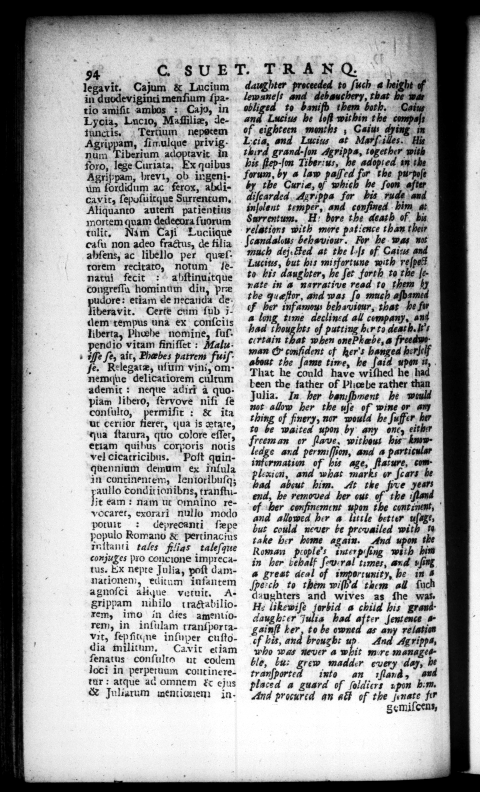

GGG | | | | p a> w » C SUET. TRANQ. legavit. Cajum & Lucium in duodeviginti menſium ſpario amiſit ambos : Cajo, in Lycia, Lucio, Maſfilize, detunctis. Tertium nepotem Agrippam, ſi mulque privignum Tiberium 2 in dro, lege u P Agrippam, brevi, ob ingeni2 bbrddum ac ferox, Abdi cavit, ſepuſuirque Surrentum. Aliquanto autem patientius mortem quam dedeeora ſuorum tulit. Nam Caji Luciique caſu non adeo fractus, de fil ia ahſens, ac libello per quæſrorem recitato, notum lenatui fecit: ahſtinuitque congreſſu hominum din, præ dore: etiam de necanda de iberavit. Certe cum ſub 7dem tempus una ex conſoiis liberra, Phoebe nomine, ſuſpend io vitam finiſſet: Malu. + ofſe ſe, ait, Fæbes patrem fuiſfe. Relegatæ, uſum vini, omnemque delicatiorem cultum ademir : neque adirt a quopiam libero, ſervove nift ſe conſulto, permiſit: & ita ut certior fieret, qua is tate, qua ſtatura, quo colore eſſet, etiam quibus corporis notis vel cicarricibus. Poſt quinquennium demum ex inſula in continentem, lenioribuſq; aullo condit ionibns, tranſtuit eam: nam ut omnino revocaret, exorari nullo modo potuit : deprecanti ſepe populo Romano & pertinacius inſtanti tales flias taleſque conjuges pro concione imprecatus. Ex nepte Julia, poſt damnationem, editum infantem agnoſci alique vetuit. As grippam nihilo tractabilio. rem, imo in dies amentiorem, in inſulam tranſpor tavit, ſepſitane inſuper cuſtodia militum. Cavit etiam ſenatus conſulta ut eodem loci in perpetuum cout ine retur: atque ad omnem & ejus & juliarum mentionen in= daughter proceeded to ſuch @ bei lewaneſs L deb auc hery, that 274 obliged to banifh them both. Caius and Lucius he lofl within the compaſs of eighteen months , Caius dying in 1570 — * at Marſ-i — on third grand-ſon Agripps, together wi his 2 2257755 þe * . in the forum, by a law paſſed 77 the purpoſe the Curie, of which he ſoon after ſcarded Agrippa for his rude and inſolent temper, and confined bim at Sarrentum, H: bore the death of bu relation: with more patience than their ſcandalous behaviour. For he wag wt much dej. Fed at the Il of Caius and Lucius, but his misfortune with reſpe? to his daughter, he ſet forth to the ſe. rate in a narrative read to them the queftor, and was ſo much aſbs F her infamous behaviour, that be fir a long time declined all company, ans had thoughts of putting her to death. It's certain that when onePhabe, a freeaweman & confident cf her's hanged herjelf about the ſame time, he ſaid upon d, That he could have wiſhed he had been the father of Pliœbe rather than Julia. In her bamſhnent he would not allow her the uſe 4 wine or am thing of finery, nor would he ſuffer her ro be waited upon by any one, either freeman or ſlave, without his (-oge and permiſſion, and a particular information of his age, ſtature, complexicn, and what marks or ſcars be ad abcut him. At the five years end, he removed her out of the iſland ef (her confinement upon the continent, and allowed her a little better wage, but could never be prevailed with 1 take ber home again. And upon the Roman prople's inter p wath hin in her behalf ſeu:ral times, and ing 4 great deal of imporcunity, he in # ſpe:ch to them wiſh'd them all ſuch daughters and wives as ſhe was. Hz likewiſe jorbid a child his granddaughter Julia had after ſentence & gainſt ker, to be owned as any relation of hes, and brought up. And Agripps, who was never a whit mire manages* ble, bu: * madder every day, bt tranſported into an 1ſlarnd, placed a guard of ſoldiers upon bum. And procured an at} of the ſenate fir gemiſoens, d 6 TIC —_——_ 7 + 56 0” 6
